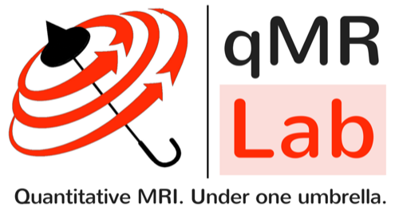

Magnetization Transfer · Exercise 6-3
Fit a qMT voxel by hand
In this exercise, we will cover:
- The qMT images, raw and divided by MT off
- How F, kf, T2,r and T2,f shape a Z-spectrum
- Pick a white matter and a grey matter voxel, and see their measured Z-spectra
- Fit them by hand, then compare with a computer's fit and qMRLab's
The qMT images
- Which images are the darkest? The stronger pulse (426°) closest to resonance (443 Hz) saturates the macromolecules the most, and exchange passes it on to water.
- At 17 kHz, the MT images look almost like MT off. Why? Even the macromolecules’ broad line has little absorption 17 kHz away, so the pulse barely saturates anything. That makes these points close to 1 once normalized.
- The MT-off image is not uniform across the brain. Does a brighter voxel there mean more macromolecules? No: without the MT pulse, the signal reflects proton density, T1 weighting, and the receive coil’s sensitivity, which varies across the head. None of that is MT.
- Why divide by the MT-off image? Each voxel’s MT images and its MT-off image share the same proton density, T1 weighting and coil sensitivity; the ratio keeps only what the MT pulse did, with 1 meaning no MT effect. It does not correct B1: the MT pulse’s real angle still matters.
- In the normalized images, which tissue is the darkest? White matter: it has the most macromolecules (myelin), so the most MT. CSF has almost none and stays near 1.
The Z-spectrum
- Signal (MT on / MT off) vs offset, at two pulse powers
- Its shape encodes the tissue: F (depth), kf, T2,r (width)
Pick your voxels
Exercise 6-3 · (a)
Fit this voxel by hand
Move the sliders until the curves go through the measured points. Get the sum of squared errors below 0.01, then submit.
The voxels you picked. T1, B0 and B1 come from their maps:
Sum of squared errors–
Exercise 6-3 · (b)
Your fit, the computer's, and qMRLab's
The computer minimizes the same sum of squares (Levenberg–Marquardt). How close did you get? Which parameter was hardest?
- F sets how deep the curves dip; T2,r how wide; T2,f only the points nearest resonance (direct saturation).
- kf is the hardest: more macromolecules with slower exchange (higher F, lower kf) give almost the same curves. The valley shows it: a long, tilted trough of good fits.
- qMRLab fits an analytical steady-state model (Sled & Pike); here the model is a full simulation. Both land in the same place, within a few %.
Exercise 6-3 · Summary
Summary
- The Z-spectrum's depth, width and shape near resonance carry F, T2,r and T2,f; a qMT fit finds the four parameters that reproduce all ten points.
- F and kf trade off: many (F, kf) pairs fit almost equally well, so kf is the noisiest qMT map.
- Before any fit: divide by MT off (the “1”, and the receive field cancels), and use the voxel’s B0 (the true offsets) and B1 (the true MT angles).

To fit qMT data of your own, use qMRLab (qmt_spgr), the open-source software behind this chapter, developed at NeuroPoly.